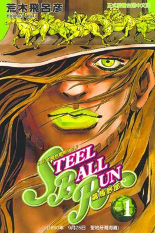
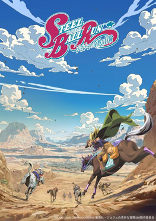

Opening (echo por los fanes ya que no existe uno oficial)
Holy Steel
Trailer oficial
Portada
Manga
anime
Historia del manga
JoJo’s Bizarre Adventure Parte 7, titulada Steel Ball Run, se publicó como manga entre 2004 y 2011. La historia se desarrolla en Estados Unidos en 1890 y gira en torno a una carrera transcontinental a caballo llamada Steel Ball Run, que va de San Diego a Nueva York. El protagonista es Johnny Joestar, un jinete paralítico que busca recuperar el uso de sus piernas. Se une a Gyro Zeppeli, un misterioso verdugo del Reino de Nápoles que utiliza las Bolas de Acero con la técnica del Spin (Giro). A lo largo de la carrera, se enfrentan a competidores y enemigos con Stands, descubriendo la existencia de las partes del Cuerpo Sagrado (Holy Corpse), un artefacto con poderes extraordinarios que también atrae la atención del presidente de Estados Unidos, Funny Valentine, quien posee el Stand D4C.
El manga de Steel Ball Run introdujo un universo alternativo dentro de JoJo, permitiendo un reinicio parcial de la continuidad y dando un estilo más maduro y aventurero a la saga. Los combates combinan acción, estrategia y creatividad, especialmente en el desarrollo de los Stands y la evolución del Stand de Johnny (Tusk) en varias etapas, culminando en la Rotación Infinita.
El anime de Steel Ball Run aún no tiene fecha de estreno oficial (se espera que para 2026 este), pero se espera una adaptación futura dada la popularidad de esta parte y su importancia como punto de reinicio en la narrativa de JoJo’s Bizarre Adventure.